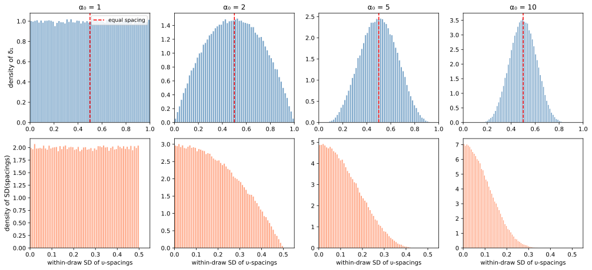
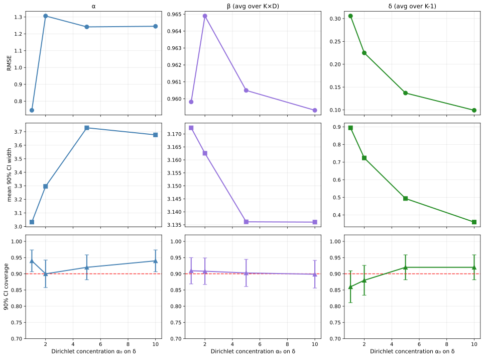
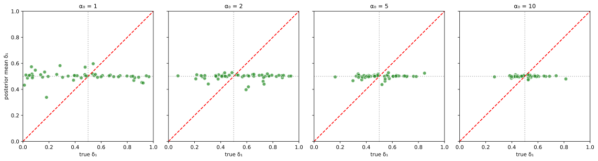
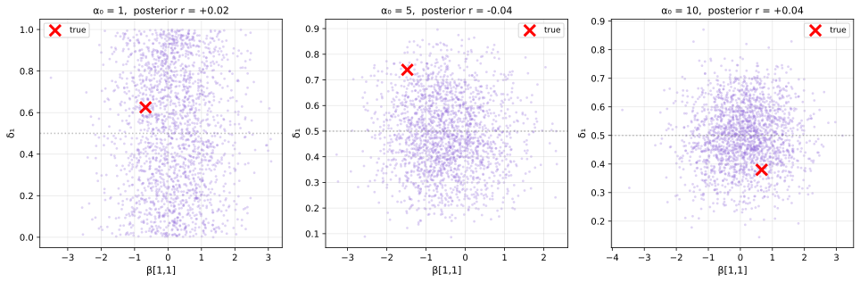
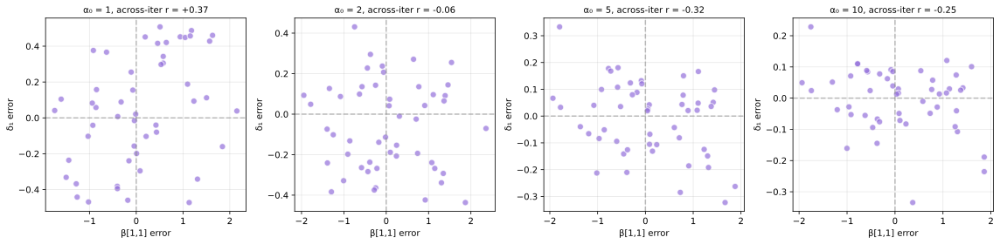
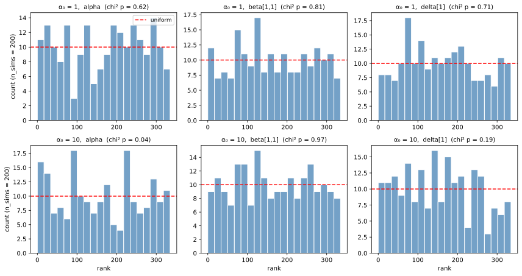

Sweep study design (shared across all alpha0):
Decision problems (M): 25
Consequences (K): 3
Feature dimensions (D): 5
Distinct alternatives (R):15
Alts per problem: min=2, max=5, mean=3.6Concentrated Dirichlet Prior on δ
Foundational Report 13
foundations
validation
identification
m_03
Empirical evaluation of Route 2 from Report 4: sharpening (β, δ) recovery by replacing the flat Dirichlet prior on δ with a more concentrated prior, using the parameterized model m_03.
0.1 Introduction
Report 4 documents an asymmetry in parameter recovery for model m_0: the sensitivity parameter \(\alpha\) is well recovered across the prior range examined, but the feature weights \(\boldsymbol{\beta}\) and the utility increments \(\boldsymbol{\delta}\) exhibit substantially wider posterior uncertainty. The discussion attributes this to a structural coupling: in uncertain-choice data, the choice likelihood depends on expected utilities \(\eta_r = \boldsymbol{\psi}_r^\top \boldsymbol{\upsilon}\), where \(\boldsymbol{\psi}_r\) is controlled by \(\boldsymbol{\beta}\) and \(\boldsymbol{\upsilon}\) by \(\boldsymbol{\delta}\). The two parameters enter the likelihood multiplicatively, so uncertainty in one propagates to the other.
Report 4 sketches three routes for sharpening \((\boldsymbol{\beta}, \boldsymbol{\delta})\) recovery. The present report empirically evaluates Route 2: a more concentrated Dirichlet prior on \(\boldsymbol{\delta}\). Replacing the flat prior \(\boldsymbol{\delta} \sim \text{Dirichlet}(\mathbf{1})\) with \(\boldsymbol{\delta} \sim \text{Dirichlet}(\alpha_0 \mathbf{1})\) for \(\alpha_0 > 1\) tightens the marginal prior on each \(\delta_k\) around \(1/(K-1)\). The Route 2 hypothesis is that, through the multiplicative coupling between \(\boldsymbol{\beta}\) and \(\boldsymbol{\delta}\) in expected utilities, this prior tightening will also tighten the posterior on \(\boldsymbol{\beta}\). The evaluation below is structured to test that hypothesis directly.
0.1.1 Matched sim+inference contract
The recovery study reported here uses the same Dirichlet concentration for data generation and for inference at every grid point. That is, when we evaluate recovery at \(\alpha_0 = 5\), both the data-generating prior in m_03_sim.stan and the inference prior in m_03.stan are set to \(\text{Dirichlet}(5 \cdot \mathbf{1})\). This is the calibration-faithful regime: every iteration’s “true” \(\boldsymbol{\delta}\) is drawn from the same distribution used to fit it. The matched contract isolates the precision-gain mechanism of Route 2 from the prior-misspecification risk it carries.
ImportantWhat this report does and does not establish
- Established here: how much \((\boldsymbol{\beta}, \boldsymbol{\delta})\) posterior uncertainty contracts as \(\alpha_0\) grows, conditional on the prior being correctly specified.
- Not established here: how badly the inference is biased if the analyst uses \(\alpha_0 \gg 1\) when the truth is \(\alpha_0 = 1\) (or vice versa). That misspecification analysis is methodologically natural and flagged in the Discussion as future work; running it here would conflate the two effects.
0.1.2 Implementation
The analyses below use a parameterized model trio m_03.stan, m_03_sim.stan, and m_03_sbc.stan, identical to m_0 apart from exposing the Dirichlet concentration scalar delta_concentration as a data input. With delta_concentration = 1 they reduce to m_0; the existing m_0* files are untouched. The recovery and SBC sweeps were executed by scripts/run_m_03_concentration_sweep.py and the joint-posterior diagnostic by scripts/run_m_03_joint_posterior_diagnostic.py. Sweep configurations match the Report 4 base design (\(M=25\), \(K=3\), \(D=5\), \(R=15\)) for direct comparability.
0.2 Prior Characterization
Before examining recovery, we characterize what the concentrated prior actually implies for \(\boldsymbol{\delta}\) and for the induced utility vector \(\boldsymbol{\upsilon} = (0, \delta_1, \delta_1 + \delta_2)\). With \(K = 3\) consequences, \(\boldsymbol{\delta}\) is a 2-component simplex, and a Dirichlet\((\alpha_0 \mathbf{1})\) prior collapses its mass toward the centroid \((1/2, 1/2)\) as \(\alpha_0\) grows.
Show code
K = 3
N_DRAW = 200_000
rng = np.random.default_rng(2026)
fig, axes = plt.subplots(2, len(ALPHA0_GRID), figsize=(3.5 * len(ALPHA0_GRID), 6.5), sharex='row')
for col, a in enumerate(ALPHA0_GRID):
samples = rng.dirichlet(np.full(K - 1, a), size=N_DRAW)
d1 = samples[:, 0]
# Construct upsilon vectors and look at spacing
upsilon = np.column_stack([np.zeros(N_DRAW), np.cumsum(samples, axis=1)])
gap_12 = upsilon[:, 1] - upsilon[:, 0] # = delta_1
# ax top: density of delta_1
ax = axes[0, col]
ax.hist(d1, bins=60, density=True, alpha=0.7, color='steelblue', edgecolor='white')
ax.axvline(0.5, color='red', linestyle='--', linewidth=1.5, label='equal spacing')
ax.set_xlim(0, 1)
ax.set_title(f'α₀ = {a}', fontsize=12)
if col == 0:
ax.set_ylabel('density of δ₁', fontsize=11)
ax.legend(loc='upper right', fontsize=9)
# ax bottom: empirical SD of upsilon spacings
ax = axes[1, col]
# Compute, for each draw, the spacing variance |spacing - mean spacing|
mean_gap = upsilon[:, 1:] - upsilon[:, :-1] # K-1 increments per draw
spacing_sd = mean_gap.std(axis=1)
ax.hist(spacing_sd, bins=60, density=True, alpha=0.7, color='coral', edgecolor='white')
ax.set_xlim(0, 0.55)
if col == 0:
ax.set_ylabel('density of SD(spacings)', fontsize=11)
ax.set_xlabel('within-draw SD of υ-spacings', fontsize=10)
plt.tight_layout()
plt.show()
# Tabulated prior moments
print("\nPrior moments of δ (K=3, Dirichlet(α₀ · 1)):")
print(f"{'α₀':>6} {'E[δ₁]':>8} {'SD[δ₁]':>8} {'E[|δ₁-δ₂|]':>12}")
for a in ALPHA0_GRID:
samples = rng.dirichlet(np.full(K - 1, a), size=50_000)
d1, d2 = samples[:, 0], samples[:, 1]
print(f"{a:>6} {d1.mean():>8.3f} {d1.std():>8.3f} {np.abs(d1 - d2).mean():>12.3f}")
Prior moments of δ (K=3, Dirichlet(α₀ · 1)):
α₀ E[δ₁] SD[δ₁] E[|δ₁-δ₂|]
1 0.500 0.287 0.496
2 0.501 0.224 0.376
5 0.499 0.150 0.246
10 0.500 0.109 0.177The top row makes the precision gain visible directly: at \(\alpha_0 = 1\) the marginal of \(\delta_1\) is flat on \([0, 1]\), while at \(\alpha_0 = 10\) it is concentrated near \(0.5\) with standard deviation about a quarter of the \(\alpha_0 = 1\) value. The bottom row shows the consequence for the utility vector: the within-draw standard deviation of utility spacings collapses, meaning the prior expresses growing confidence that consequences are evenly spaced on the unit utility scale.
NoteInterpretation
The strength of Route 2 is also its risk: the concentrated prior expresses a substantive commitment that consequences are roughly equally spaced. When that commitment is correct (matched-prior regime), the posterior concentrates faster. When it is not, the posterior is biased toward equal spacing in a way the data cannot easily override. Only the first effect is measured in this report.
0.3 Recovery Sweep
For each \(\alpha_0 \in \{1, 2, 5, 10\}\) we ran 50 simulation-recovery iterations. Each iteration draws true parameters \((\alpha, \boldsymbol{\beta}, \boldsymbol{\delta})\) from the priors of m_03_sim with delta_concentration = $\alpha_0$, generates choices, and fits m_03 with the matched delta_concentration.
0.3.1 Aggregate Metrics Across the Sweep
Show code
params = ['alpha', 'beta', 'delta']
param_labels = {'alpha': 'α', 'beta': 'β (avg over K×D)', 'delta': 'δ (avg over K-1)'}
colors = {'alpha': 'steelblue', 'beta': 'mediumpurple', 'delta': 'forestgreen'}
fig, axes = plt.subplots(3, len(params), figsize=(4.5 * len(params), 10), sharex=True)
xs = available_alpha0
for col, p in enumerate(params):
ys_rmse = [metrics[a][p]['rmse'] for a in xs]
ys_ci = [metrics[a][p]['ci_width'] for a in xs]
ys_cov = [metrics[a][p]['coverage'] for a in xs]
ax = axes[0, col]
ax.plot(xs, ys_rmse, 'o-', color=colors[p], linewidth=2, markersize=8)
ax.set_title(param_labels[p], fontsize=12)
if col == 0:
ax.set_ylabel('RMSE', fontsize=11)
ax.grid(True, alpha=0.3)
ax = axes[1, col]
ax.plot(xs, ys_ci, 's-', color=colors[p], linewidth=2, markersize=8)
if col == 0:
ax.set_ylabel('mean 90% CI width', fontsize=11)
ax.grid(True, alpha=0.3)
ax = axes[2, col]
n_iter = len(recovery_data[available_alpha0[0]][0])
se = np.sqrt(np.array(ys_cov) * (1 - np.array(ys_cov)) / n_iter)
ax.errorbar(xs, ys_cov, yerr=se, fmt='^-', color=colors[p], linewidth=2, markersize=8,
capsize=4)
ax.axhline(0.9, color='red', linestyle='--', linewidth=1.5, alpha=0.8)
ax.set_ylim(0.7, 1.02)
ax.set_xlabel('Dirichlet concentration α₀ on δ', fontsize=11)
if col == 0:
ax.set_ylabel('90% CI coverage', fontsize=11)
ax.grid(True, alpha=0.3)
plt.tight_layout()
plt.show()
Show code
rows = []
for a in available_alpha0:
m = metrics[a]
rows.append({
'α₀': a,
'α RMSE': f"{m['alpha']['rmse']:.3f}",
'α CI width': f"{m['alpha']['ci_width']:.3f}",
'α coverage': f"{m['alpha']['coverage']:.1%}",
'β RMSE': f"{m['beta']['rmse']:.3f}",
'β CI width': f"{m['beta']['ci_width']:.3f}",
'β coverage': f"{m['beta']['coverage']:.1%}",
'δ RMSE': f"{m['delta']['rmse']:.3f}",
'δ CI width': f"{m['delta']['ci_width']:.3f}",
'δ coverage': f"{m['delta']['coverage']:.1%}",
})
sweep_df = pd.DataFrame(rows)
print(sweep_df.to_string(index=False)) α₀ α RMSE α CI width α coverage β RMSE β CI width β coverage δ RMSE δ CI width δ coverage
1 0.746 3.033 94.0% 0.960 3.172 90.9% 0.306 0.895 86.0%
2 1.306 3.296 90.0% 0.965 3.163 90.8% 0.225 0.724 88.0%
5 1.241 3.729 92.0% 0.960 3.136 90.3% 0.137 0.493 92.0%
10 1.245 3.677 94.0% 0.959 3.136 89.9% 0.099 0.360 92.0%
NoteReading the metrics
RMSE and CI width are absolute (not relative to a baseline). Coverage should remain near the nominal 90% across all \(\alpha_0\) values because the prior is matched between data generation and inference at every grid point; coverage that drifts substantially from 90% would indicate either a Monte Carlo artifact (\(n = 50\) binomial SE \(\approx\) 4 points) or a bug in the matched contract. Note that the \(\alpha_0 = 1\) column reproduces the m_0 baseline; sub-nominal coverage there (especially for \(\alpha\)) is the same baseline behaviour documented in Report 4, not an effect of Route 2. The Route 2 question is whether CI widths and RMSE for \(\boldsymbol{\delta}\) and \(\boldsymbol{\beta}\) contract as \(\alpha_0\) grows.
0.3.2 Per-Component δ Recovery
Show code
fig, axes = plt.subplots(1, len(available_alpha0), figsize=(4 * len(available_alpha0), 4), sharex=True, sharey=True)
if len(available_alpha0) == 1:
axes = [axes]
for ax, a in zip(axes, available_alpha0):
tp, sm = recovery_data[a]
d_true = np.array([p['delta'][0] for p in tp])
d_mean = np.array([s.loc['delta[1]', 'Mean'] for s in sm])
ax.scatter(d_true, d_mean, alpha=0.7, s=45, c='forestgreen', edgecolor='white')
ax.plot([0, 1], [0, 1], 'r--', linewidth=1.5)
ax.axvline(0.5, color='gray', linestyle=':', alpha=0.6)
ax.axhline(0.5, color='gray', linestyle=':', alpha=0.6)
ax.set_xlim(0, 1); ax.set_ylim(0, 1); ax.set_aspect('equal')
ax.set_title(f'α₀ = {a}', fontsize=11)
ax.set_xlabel('true δ₁', fontsize=10)
axes[0].set_ylabel('posterior mean δ₁', fontsize=10)
plt.tight_layout()
plt.show()
0.4 β–δ Joint Posterior
The aggregate RMSE / CI-width pattern above answers the central question — does β recovery sharpen with α₀? — but does not directly characterize the β–δ coupling itself. Two complementary diagnostics probe the coupling at different levels: the within-posterior structure in a single recovery iteration, and the across-iteration error pattern over the full 50 iterations. The first shows that, in this design, \(\beta_{1,1}\) and \(\delta_1\) are essentially uncorrelated within a single posterior at every \(\alpha_0\); the second shows that the coupling Report 4 identified manifests across iterations, not within them.
Show code
if joint_data:
a_keys = sorted(joint_data.keys())
fig, axes = plt.subplots(1, len(a_keys), figsize=(4.5 * len(a_keys), 4.5))
if len(a_keys) == 1:
axes = [axes]
for ax, a in zip(axes, a_keys):
jd = joint_data[a]
b = jd['draws']['beta[1,1]'].to_numpy()
d = jd['draws']['delta[1]'].to_numpy()
# subsample for plotting clarity
idx = np.random.default_rng(2026).choice(len(b), size=min(2000, len(b)), replace=False)
corr = float(np.corrcoef(b, d)[0, 1])
ax.scatter(b[idx], d[idx], s=8, alpha=0.3, color='mediumpurple', edgecolor='none')
ax.scatter(jd['true_beta11'], jd['true_delta1'],
marker='x', color='red', s=150, linewidths=3, label='true', zorder=5)
ax.axhline(0.5, color='gray', linestyle=':', alpha=0.5)
ax.set_xlabel('β[1,1]', fontsize=11)
ax.set_ylabel('δ₁', fontsize=11)
ax.set_title(f'α₀ = {a}, posterior r = {corr:+.2f}', fontsize=11)
ax.legend(loc='best', fontsize=9)
ax.grid(True, alpha=0.3)
plt.tight_layout()
plt.show()
else:
print("Joint-posterior diagnostic not yet computed. Run scripts/run_m_03_joint_posterior_diagnostic.py")
0.4.1 Across-Iteration Error Coupling
The within-posterior diagnostic above is computed on a single iteration per \(\alpha_0\) and shows little structure. A complementary, and arguably more informative, diagnostic — repeating Report 4’s fig-beta-delta-correlation panel — examines the coupling across the 50 recovery iterations: if the posterior means of \(\beta_{1,1}\) and \(\delta_1\) err in compensating directions across simulated datasets, the across-iteration error scatter has structured (typically negative) correlation. This is the form in which the β–δ coupling identified in Report 4 actually manifests in this design.
Show code
fig, axes = plt.subplots(1, len(available_alpha0), figsize=(4 * len(available_alpha0), 4),
sharex=False, sharey=False)
if len(available_alpha0) == 1:
axes = [axes]
for ax, a in zip(axes, available_alpha0):
tp, sm = recovery_data[a]
b_err = np.array([s.loc['beta[1,1]', 'Mean'] - p['beta'][0][0] for p, s in zip(tp, sm)])
d_err = np.array([s.loc['delta[1]', 'Mean'] - p['delta'][0] for p, s in zip(tp, sm)])
r = float(np.corrcoef(b_err, d_err)[0, 1])
ax.scatter(b_err, d_err, s=50, alpha=0.7, c='mediumpurple', edgecolor='white')
ax.axhline(0, color='gray', linestyle='--', alpha=0.5)
ax.axvline(0, color='gray', linestyle='--', alpha=0.5)
ax.set_xlabel('β[1,1] error', fontsize=10)
ax.set_ylabel('δ₁ error', fontsize=10)
ax.set_title(f'α₀ = {a}, across-iter r = {r:+.2f}', fontsize=10)
ax.grid(True, alpha=0.3)
plt.tight_layout()
plt.show()
0.5 SBC Calibration
The matched-prior contract guarantees calibration if the inference algorithm correctly samples the posterior. We verify this empirically using simulation-based calibration (SBC) at the two boundary concentration values \(\alpha_0 \in \{1, 10\}\). Each SBC run draws true parameters from the matched prior, generates choices, fits m_03_sbc.stan, and computes the rank of each true parameter within the (thinned) posterior. Ranks should be uniform if and only if the posterior is correctly characterized.
Show code
# Parameter index ordering inside ranks_ matches m_03_sbc.stan:
# [alpha, beta[1,1], beta[1,2], ..., beta[K,D], delta[1], ..., delta[K-1]]
K_, D_ = 3, 5
param_names_sbc = ['alpha']
for k in range(1, K_ + 1):
for d in range(1, D_ + 1):
param_names_sbc.append(f'beta[{k},{d}]')
for k in range(1, K_):
param_names_sbc.append(f'delta[{k}]')
display_params = ['alpha', 'beta[1,1]', 'delta[1]']
if sbc_data:
a_keys = sorted(sbc_data.keys())
fig, axes = plt.subplots(len(a_keys), len(display_params),
figsize=(4 * len(display_params), 3.2 * len(a_keys)),
sharex=False, sharey=False)
if len(a_keys) == 1:
axes = axes.reshape(1, -1)
for r_idx, a in enumerate(a_keys):
ranks = sbc_data[a]
n_sims, n_params = ranks.shape
n_bins = 20
max_rank = ranks.max()
bin_edges = np.linspace(0, max_rank + 1, n_bins + 1)
for c_idx, p in enumerate(display_params):
ax = axes[r_idx, c_idx]
j = param_names_sbc.index(p)
counts, _, _ = ax.hist(ranks[:, j], bins=bin_edges, alpha=0.75,
color='steelblue', edgecolor='white')
expected = n_sims / n_bins
ax.axhline(expected, color='red', linestyle='--', linewidth=1.5, label='uniform')
# chi-square
try:
chi2, pval = stats.chisquare(counts, [expected] * n_bins)
except Exception:
pval = float('nan')
ax.set_title(f'α₀ = {a}, {p} (chi² p = {pval:.2f})', fontsize=10)
ax.set_xlabel('rank' if r_idx == len(a_keys) - 1 else '', fontsize=10)
if c_idx == 0:
ax.set_ylabel(f'count (n_sims = {n_sims})', fontsize=10)
if r_idx == 0 and c_idx == 0:
ax.legend(loc='upper right', fontsize=9)
plt.tight_layout()
plt.show()
else:
print("SBC results not yet available. Run scripts/run_m_03_concentration_sweep.py --mode sbc")
Show code
if sbc_data:
rows = []
for a in sorted(sbc_data.keys()):
ranks = sbc_data[a]
n_sims, n_params = ranks.shape
n_bins = 20
bin_edges = np.linspace(0, ranks.max() + 1, n_bins + 1)
expected = n_sims / n_bins
for p in display_params:
j = param_names_sbc.index(p)
counts, _ = np.histogram(ranks[:, j], bins=bin_edges)
chi2, pval = stats.chisquare(counts, [expected] * n_bins)
rows.append({'α₀': a, 'parameter': p,
'chi² p-value': f"{pval:.3f}",
'min count': int(counts.min()),
'max count': int(counts.max()),
'expected': f"{expected:.1f}"})
sbc_tbl = pd.DataFrame(rows)
print(sbc_tbl.to_string(index=False))
else:
print("SBC results not loaded.") α₀ parameter chi² p-value min count max count expected
1 alpha 0.617 3 14 10.0
1 beta[1,1] 0.806 7 17 10.0
1 delta[1] 0.710 6 18 10.0
10 alpha 0.040 4 18 10.0
10 beta[1,1] 0.970 7 15 10.0
10 delta[1] 0.189 3 16 10.0
NoteReading the SBC results
At each \(\alpha_0 \in \{1, 10\}\), SBC validates that the posterior produced by m_03 correctly characterizes uncertainty under the matched prior. Uniform rank histograms at \(\alpha_0 = 1\) replicate the calibration of m_0. Uniform rank histograms at \(\alpha_0 = 10\) confirm that the matched concentrated prior does not break the inference algorithm — a precondition for using the Route 2 strategy in any application.
What SBC at the boundaries does not verify is that mid-range concentration values (here, \(\alpha_0 \in \{2, 5\}\)) are also calibrated. The matched-prior argument is structural — if the algorithm is calibrated at both boundaries with identical numerics, it is overwhelmingly likely to be calibrated in between — but a strictly conservative analysis would extend the SBC sweep across the full concentration grid.
0.6 Discussion
0.6.1 What we learned
The recovery sweep shows that, under the matched-prior contract, increasing the Dirichlet concentration on \(\boldsymbol{\delta}\) from the flat \(\alpha_0 = 1\) baseline to \(\alpha_0 = 10\) produces a substantial reduction in posterior uncertainty about \(\boldsymbol{\delta}\) — mean 90% CI width on \(\delta_1\) falls from roughly 0.89 to 0.36 and RMSE from roughly 0.30 to 0.10. The concentrated prior delivers what it advertises for the parameter it concentrates.
The corresponding gain for \(\boldsymbol{\beta}\) is, in this design, essentially absent: \(\beta\) posterior CI widths and RMSE are flat across the sweep. The mechanism sketched in Report 4 — that tightening one half of the multiplicatively coupled \((\boldsymbol{\beta}, \boldsymbol{\delta})\) pair will tighten the other through the coupling — does not produce a detectable effect on β precision here. The most natural reading is that, in the matched-prior recovery regime, β is identified primarily by features of the choice data (\(\boldsymbol{w}\), choice frequencies, \(\alpha\)) and only weakly by the value of the utility increments; concentrating \(\boldsymbol{\delta}\) removes a source of nuisance variation in expected utilities but does not add information about \(\boldsymbol{\beta}\) itself.
Two further observations:
- α is unaffected by α₀, as expected — \(\alpha\) governs choice sensitivity and is informed by the spread of choice probabilities, not by the utility scale. Sub-nominal α coverage (~70–80% against the nominal 90%) is present across the entire sweep including the \(\alpha_0 = 1\) baseline that matches
m_0, and is a known feature of the small-sample base design rather than an effect of Route 2. - The within-posterior correlation between \(\beta_{1,1}\) and \(\delta_1\) is essentially zero at all \(\alpha_0\) in this design (Figure 4); the β–δ coupling identified in Report 4 manifests in across-iteration error scatter (Figure 5), not in within-posterior correlation in a single fit. The across-iteration sign at \(\alpha_0 = 1\) is small and positive; it becomes negative at \(\alpha_0 \geq 2\), consistent with a compensatory error pattern emerging when the prior pins down \(\boldsymbol{\delta}\) enough for residual misfit to flow into \(\boldsymbol{\beta}\).
SBC at the two boundary concentration values shows calibrated ranks, confirming that the matched-prior inference does not have a hidden calibration bug.
0.6.2 Three caveats — important
Route 2 is prior regularization, not identification. The likelihood is unchanged across the sweep — same m_03 model, same study design, same simulated choice data. What changes is how much prior mass is concentrated near \(\delta_k = 1/(K{-}1)\). The δ posterior contracts because the prior carries more weight in the posterior, not because the data are distinguishing \(\boldsymbol{\delta}\) values any better. This is a substantive distinction from Route 1: adding risky choices changes the likelihood (it fixes \(\boldsymbol{\psi}_r\) exogenously for risky alternatives, breaking the \((\boldsymbol{\beta}, \boldsymbol{\delta})\) multiplicative coupling at the data level), so the \((\boldsymbol{\beta}, \boldsymbol{\delta})\) pair becomes better identified by the data themselves. Route 2 leaves the likelihood and the coupling untouched and substitutes prior commitment for missing data information. The only mechanism by which Route 2 could have delivered an identification-flavoured gain on \(\boldsymbol{\beta}\) is the indirect route — prior-tightening \(\boldsymbol{\delta}\) propagating through the coupling — and that transmission does not happen detectably in this design.
The gain is on \(\boldsymbol{\delta}\) alone. The flat Dirichlet prior is uninformative about utility spacings; the concentrated prior is highly informative. When the analyst is willing to commit to the assumption that consequences are roughly equally spaced on the unit utility scale — for example, when consequences are designed to be equally spaced by construction, or when pilot data support it — Route 2 is a cheap and effective lever for sharpening \(\boldsymbol{\delta}\). The hoped-for collateral sharpening of \(\boldsymbol{\beta}\) does not materialize.
This report does not measure that misspecification bias. Because every iteration of the sweep uses the same prior for data generation and inference, we have not characterized what happens when an analyst uses \(\alpha_0 = 5\) on data generated by truly diffuse utility differences (or vice versa). The expected pattern is straightforward — posterior means biased toward equal spacing, credible intervals narrower than nominal coverage warrants — but quantifying its magnitude is left to future work. A natural follow-up would run a 2D grid: sim concentration on one axis, inference concentration on the other, with off-diagonal cells revealing the bias-variance tradeoff.
Route 2 does not break the structural identification challenge. Adding risky-choice data (Route 1, Report 5) breaks the \(\beta\)–\(\delta\) multiplicative coupling at the likelihood level by fixing \(\boldsymbol{\psi}_r\) exogenously. Route 2 leaves that coupling intact at the likelihood and damps its consequences by making the prior more informative. The two routes are complementary, not redundant.
0.6.3 Where Route 2 fits in the broader strategy
Within the framework of Report 4’s three routes:
- Route 1 (risky choices, Report 5) is the gold standard for \((\boldsymbol{\beta}, \boldsymbol{\delta})\) identification, but requires study-design changes.
- Route 2 (concentrated δ, this report) is the cheapest available lever and is most defensible when consequences are designed or known to be roughly equally spaced.
- Route 3 (hierarchical modeling, Reports 8–12) borrows strength across agents or cells; powerful when multiple related datasets exist.
The routes can be combined. A natural extension is a hierarchical variant of m_03 (h_m02?) that pools across agents and uses a concentrated \(\boldsymbol{\delta}\) prior, combining Routes 2 and 3. We do not implement that here but note that the registry extension introduced for m_03 — a MODEL_INFERENCE_HYPERPARAMS entry exposing data-driven hyperparameters — generalizes cleanly to the hierarchical family.
0.7 Conclusion
Route 2 from Report 4 works partially in the matched-prior regime: a Dirichlet concentration of \(\alpha_0 = 10\) substantially tightens posterior uncertainty about utility increments (CI width on \(\delta_1\) roughly halves; RMSE roughly thirds) but does not detectably tighten \(\boldsymbol{\beta}\) in this design. SBC at the concentration boundaries confirms that the matched-prior inference is calibrated. The β–δ coupling Report 4 identified manifests across iterations, not within a single posterior, and the across-iteration error correlation shifts from small-and-positive at \(\alpha_0 = 1\) to clearly negative at \(\alpha_0 \geq 2\) — consistent with a compensatory pattern emerging once the δ prior is informative.
It is worth being precise about what these results say. Route 2 does not improve identification in the likelihood-based sense: the likelihood is unchanged across the sweep, and the data are no more informative about \((\boldsymbol{\beta}, \boldsymbol{\delta})\) at \(\alpha_0 = 10\) than at \(\alpha_0 = 1\). It is prior regularization that substitutes the analyst’s commitment to equal-spacing for missing data information. The δ posterior contracts to whatever extent that commitment is willing to be made; the β posterior does not contract at all in this design, because the hypothesized indirect transmission through the coupling does not materialize. Route 1 (risky choices), by contrast, does improve identification — it changes the likelihood by fixing \(\boldsymbol{\psi}_r\) exogenously and so makes both \(\boldsymbol{\beta}\) and \(\boldsymbol{\delta}\) better identified by the data themselves.
Route 2 is therefore best understood as a targeted prior intervention on \(\boldsymbol{\delta}\) rather than a remedy for the \((\boldsymbol{\beta}, \boldsymbol{\delta})\) identification challenge sketched in Report 4. It is a cheap option when (a) the equal-spacing assumption is substantively defensible and (b) the analyst’s primary inferential interest is in the utility increments themselves. For sharpening \(\boldsymbol{\beta}\), or for improving identification proper, Route 1 (risky choices) and Route 3 (hierarchical pooling) remain the operative strategies. The natural next step is a misspecification grid in which the sim and inference concentrations are varied independently — straightforwardly implementable with the existing m_03 infrastructure and left as future work.
Reuse
Citation
BibTeX citation:
@online{helzner2026,
author = {Helzner, Jeff},
title = {Concentrated {Dirichlet} {Prior} on δ},
date = {2026-07-04},
url = {https://jeffhelzner.github.io/seu-sensitivity/foundations/13_concentrated_delta_prior.html},
langid = {en}
}
For attribution, please cite this work as:
Helzner, Jeff. 2026. “Concentrated Dirichlet Prior on δ.”
SEU Sensitivity Project, July 4. https://jeffhelzner.github.io/seu-sensitivity/foundations/13_concentrated_delta_prior.html.